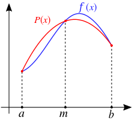

8. Библиотека SciPy¶
Библиотека scipy обладает большим функционалом для работы с данными
(документация, полезный набор примеров).
Из основных модулей хочется выделить следующие:
модуль |
функционал |
|---|---|
|
Linear algebra |
|
Integration and ODEs |
|
Optimization and root finding |
|
Interpolation |
|
Discrete Fourier transforms |
|
Statistical functions |
Важно: Документация расчитана на подготовленного читателя и для работы со многими модулями необходимо понимать хотя бы на базовом уровне как реализуются те, или иные методы.
В данной лекции приведен лишь обзор некоторых реализованных в библиотеки функций. Более подробнее можно почитать в туториалах scipy.
Рассмотрим пример использования библиотеки для простейшей линейной
регресии scipy.stats.linregress
import numpy as np
import matplotlib.pyplot as plt
from scipy import stats
#создаем линию
x = np.linspace(-2,5,20)
y = 2*x -3
#добавляем шум
y += np.random.random(20) - 0.5
plt.plot(x,y, 'ks')
#делаем линейную регрессию
result = stats.linregress(x,y)
#выводим результат
print(result)
#получаем параметры прямой
a=result.slope
b=result.intercept
plt.text(2,-3,'$y = {:.4f} x {:+.4f}$'.format(a,b))
#строим прямую
fitted_y= result.slope*x +result.intercept
plt.plot(x,fitted_y,'r-')
plt.show()
LinregressResult(slope=2.0120484283981086, intercept=-3.080383665663901, rvalue=0.9980439003977739, pvalue=3.953703901084055e-23, stderr=0.02970643441942163)
8.1. Линейная алгебра (scipy.linalg)¶
Примеры работы с данным модулем приводились ранее в разделе про NumPy.
Хочется лишь еще раз отметить, что функционал scipy.linalg
значительно обширнее одноименного модуля numpy.
8.2. Интегрирование и работа с обыкновенными дифференциальными уравнениями (scipy.integrate)¶
8.2.1. Интегрирование функций¶
Для интегрирования функций можно выделить несколько простых методов
модуля scipy.integrate (их как обычно больше. Читайте документацию
перед выбором метода для каждой конкретной задачи!):
quad(func, a, b[, args, full_output, …]) - Compute a definite
integral
dblquad(func, a, b, gfun, hfun[, args, …]) - Compute a double
integral.
tplquad(func, a, b, gfun, hfun, qfun, rfun) - Compute a triple
(definite) integral.
nquad(func, ranges[, args, opts, full_output]) - Integration over
multiple variables.
Рассмотрим несколько примеров их использования. Проинтегрируем функцию \(\int_0^1 x^2 dx =\frac{x^3}{3}\biggr\rvert_{0}^1\frac{1}{3}\)
from scipy import integrate
#задаем функцию x2, которая возвращает x**2.
#тоже можно через def x2(x):...
x2 = lambda x: x**2
res, err = integrate.quad(x2, 0,1)
print(res)
print(abs(res-1/3), err)
0.33333333333333337
5.551115123125783e-17 3.700743415417189e-15
сделаем тоже для \(\iint x^2 +y^2 dx dy =\frac{2}{3}\) .
Для этого используем dblquad(func, a, b, gfun, hfun[, args, …])
пределы по \(y\) передаются через функции y = gfun(x)..hfun(x).
Такой подход может быть удобен в случае, если нужно проинтегрировать в
виде \(\int_0^{1} dy \int_0^y f(x,y) dx\)
x2_y2 = lambda x,y : x**2 + y**2
res, err = integrate.dblquad(x2_y2, 0, 1, lambda x: 0, lambda x: 1)
print(res)
print(abs(res-2/3), err)
0.6666666666666669
2.220446049250313e-16 1.4754810833321613e-14
nquad выполняет quad несколько раз. Пределы передаются в видет
итерируемого объекта (например списка). Где каждый элемент является либо
функцией, возвращающей значения в виде пары элементов, либо просто
итерируемым объектом длины 2.
8.2.2. Интегрирование по заданному набору точек¶
Проводит интегрирование значений \(f_k = f(x_k)\) для заданного набора значений \(f\) и \(x\).
Рассмотрим два примера такого интегрирования. С остальными методами рекомендуется ознакомиться самостоятельно:
trapz(y[, x, dx, axis]) - Integrate along the given axis using the
composite trapezoidal rule.
simps(y[, x, dx, axis, even]) - Integrate y(x) using samples along
the given axis and the composite Simpson’s rule.
Если у нас есть набор из \(N\) точек \(f(x)\), то определенный интеграл можно рассчитать следующим образом:
\(\int_a^b f(x) dx \approx \sum_{k=1}^{N} \frac{f(x_{k-1}) + f(x_{k})}{2} \Delta x\)
 картинка с wikipedia.org
картинка с wikipedia.org
У такого метода довольно высокая ошибка. Для того чтобы ее уменьшить, можно рассматривать точки не парами, а тройками, интреполируя значение функции между ними квадратичной функцией. Такой подход обладает намного более высокой точностью и называется методом Симпсона:
\(\int_a^b f(x) dx \approx \frac{\Delta x}{3} \sum_{j=1}^{n/2}\bigg[f(x_{2j-2})+4f(x_{2j-1})+f(x_{2j})\bigg]\)
 картинка с wikipedia.org
Рассмотрим примеры их работы для интеграла \(\int_0^\pi sin(x) dx = 2\)
x = np.linspace(0, np.pi, 5)
y = np.sin(x)
print('Метод трапеций: {}'.format(integrate.trapz(y, x=x)))
print('Метод Симпсона: {}'.format(integrate.simps(y, x=x)))
Метод трапеций: 1.8961188979370398
Метод Симпсона: 2.0045597549844207
8.2.3. Интегрирование ОДУ¶
Модуль scipy.integrate позволяет решить задачу Коши:
\(\left\{\begin{array}{lcl}\frac{dy}{dx} &=& f(x,y) \\ y(x_0) &=& y_0\end{array}\right.\)
Для построения схемы интегрирования функцию \(f(x,y)\) в каждой точке раскладывают в ряд Тейлора, что приводит к следующему результату:
\(y(x_{k+1}) = y(x_k) + y'(x_k)\Delta x + y''(x_k)\frac{\Delta x^2}{2} + ...\)
Учет лишь первых двух слагаемых является простейшим подходом для решения
данной задачи и называется методом Эйлера. В данном модуле он в явном
виде не реализован. Приблизительный учет членов более высокого порядка
приводит к серии методов Рунге-Кутты, которые являются стандартными
в модуле scipy.integrate.
В базовой функции для интегрирования ОДУ применяется
scipy.integrate.solve_ivp(fun, t_span, y0, method='RK45', t_eval=None, dense_output=False, events=None, vectorized=False, args=None, **options)
Расмотрим пример использования данного модуля \(y' = \sin(t)\).
def y(t, y):
return np.sin(t)
res= integrate.solve_ivp(y,
(0,10), #пределы интегрирования t_span
[-1],) # y0
#t_eval=list(range(11))) #точки которые хотим получить на выходе
print(res)
plt.plot(np.linspace(0,10,200),-np.cos(np.linspace(0,10,200)), '-')
plt.plot(res.t, res.y[0], 's')
plt.show()
message: 'The solver successfully reached the end of the integration interval.'
nfev: 56
njev: 0
nlu: 0
sol: None
status: 0
success: True
t: array([0.00000000e+00, 1.00000000e-04, 1.10000000e-03, 1.11000000e-02,
1.11100000e-01, 1.11110000e+00, 3.53314302e+00, 6.03426368e+00,
8.29799322e+00, 1.00000000e+01])
t_events: None
y: array([[-1. , -1. , -0.9999994 , -0.9999384 , -0.99383474,
-0.44367774, 0.92423617, -0.96878542, 0.42963013, 0.83916286]])
y_events: None
Строим график для модели Лотки — Вольтерра (хищник - жертва)
\(\left\{\begin{array}{lcl}y_0' &=& (2-y_1)y_0 \\ y_1' &=& (-2 + y_0)y_1\end{array}\right.\)
def y(t, y):
d0=(2-y[1])*y[0]
d1=(-2 + y[0])*y[1]
return [d0,d1]
res= integrate.solve_ivp(y,
(0,20),
[1,2],
t_eval=np.linspace(0,20,200))
fig, ax = plt.subplots(nrows=1, ncols=2, figsize=(11, 5))
ax[0].plot(np.linspace(1,10,200),res.y[0], label='$y_0$')
ax[0].plot(np.linspace(1,10,200),res.y[1], label='$y_1$')
ax[0].legend()
ax[0].set_xlabel('t')
ax[0].set_ylabel('y')
ax[1].plot(res.y[0],res.y[1])
ax[1].set_xlabel('$y_0$')
ax[1].set_ylabel('$y_1$')
plt.show()
8.3. Фитирование кривых, нахождение минимума функции, решение уравнений с scipy.optimize¶
8.3.1. Фитирование кривых¶
Для простого фитирования кривых подходит метод
scipy.optimize.curve_fit(f, xdata, ydata, p0=None, sigma=None, absolute_sigma=False, check_finite=True, bounds=- inf, inf, method=None, jac=None, **kwargs)
f callable The model function, f(x, …). It must take the
independent variable as the first argument and the parameters to fit as
separate remaining arguments.
xdata array_like or object The independent variable where the
data is measured. Should usually be an M-length sequence or an
(k,M)-shaped array for functions with k predictors, but can actually be
any object.
ydata array_like The dependent data, a length M array -
nominally f(xdata, ...).
p0 array_like, optional Initial guess for the parameters (length
N). If None, then the initial values will all be 1 (if the number of
parameters for the function can be determined using introspection,
otherwise a ValueError is raised).
bounds 2-tuple of array_like, optional Lower and upper bounds on
independent variables. Defaults to no bounds. Each array must match the
size of x0 or be a scalar, in the latter case a bound will be the
same for all variables. Use np.inf with an appropriate sign to
disable bounds on all or some variables.
Рассмотрим пример фитирования кривой вида \($y(t) = A -B\exp(-k t)\):
from scipy import optimize
# задаем функцию
def f(t, a, b,k):
return a-b*np.exp(-k*t)
# строим исходную функцию
t=np.linspace(0,50,200)
plt.plot(t,f(t, 2, 2, 0.1), 'k:', label='original data')
# генерируем шумные данные
t=np.linspace(0,50,50)
ydata = f(t, 2, 2, 0.1) + 0.2*(np.random.randn(len(t)))
plt.plot(t,ydata, 's')
#фитируем
popt, pcov = optimize.curve_fit(f, t, ydata)
print(popt)
# строим оптимизированную функцию
t=np.linspace(0,50,200)
plt.plot(t,f(t, *popt), 'r-', label='optimized data')
plt.show()
[2.04170899 1.9145262 0.08003846]
8.3.2. Минимизация функции¶
В некоторых случаях вам может потребоваться найти минимум или максимум
какой-либо функции. Иногда, это приходится делать так как метод
scipy.optimize.curve_fit не справляется с поставленной задачей. В
функции scipy.optimize.minize реализованно огромное количество
методов поиска локального минимума.
Простейший метод поиска минимума функции является следование против градиента (градиентный спуск), где положение минимума значения функции \(F(x)\) находится последовательным приближением к нему. Каждое последующее значение \(x_{j+1}\) задается следующим образом:
\(\vec{x_{j+1}} = \vec{x_{j}} - \lambda_j \nabla F (\vec{x_j})\),
где \(\lambda\) - скорость спуска. В простейшем случае \(\lambda=\textrm{const}\), в более продвинутых модификациях \(\lambda\) выбирается исходя из скорости изменения функции. Данный метод приведен тут для примера, т.к. не требует больших познаний в математике для понимания того, как он работает. Более продвинутые методы работаю схожим образом, однако, выбор направления и шага происходит более сложным образом, в т.ч. с учетом и \(j-2\) шага, что позволяет достичь большей точности и лучшей сходимости.
Предупреждение
Все эти методы не гарантируют нахождения глобального минимума функции, а стремяться лишь к локальному. Для поиска глобальных минимумов можно использовать другие функции, однако, зачастую они требуют колоссальных вычислительных ресурсов.
Примечание
Если минимизация проходит медленно или не сходится, попробуйте проварьировать шаг дифференцирования или использовать другой метод.
Рассмотрим пример использования данной функции для поиска минимума функции \((x-2)^2 + y^2\).
# задаем функцию
def func(var, args):
x,y=var
print(x,y) #иногда полезно посмотреть что делает метод с вашей функцией
a=args
return (x-a)**2+y**2
initial_pos=(17,-31) # начальные координаты поиска x0,y0
res= optimize.minimize(func,
initial_pos,
args=(2),
#method = 'l-bfgs-b',
)
print(res)
print(f'\nминимум в точке (x,y) = ({res.x[0]}, {res.x[1]})')
17.0 -31.0
17.00000001490116 -31.0
17.0 -31.00000001490116
16.560083462614678 -30.090839156070334
16.56008347751584 -30.090839156070334
16.560083462614678 -30.090839170971496
14.800417313073387 -26.454195780351668
14.800417327974548 -26.454195780351668
14.800417313073387 -26.45419579525283
9.975507532850603 -16.482726027235138
9.975507547751764 -16.482726027235138
9.975507532850603 -16.4827260421363
2.0000128488064624 1.0009687230194686e-06
2.0000128637076235 1.0009687230194686e-06
2.0000128488064624 1.0158698842133163e-06
1.9999891799123668 -5.239360281676188e-06
1.999989194813528 -5.239360281676188e-06
1.9999891799123668 -5.254261442870035e-06
2.0000005918769377 -2.2305837319811206e-06
2.000000606778099 -2.2305837319811206e-06
2.0000005918769377 -2.2454848931749683e-06
fun: 5.3258220947402634e-12
hess_inv: array([[0.90514367, 0.19603683],
[0.19603683, 0.59485635]])
jac: array([ 1.19865504e-06, -4.47606863e-06])
message: 'Optimization terminated successfully.'
nfev: 21
nit: 4
njev: 7
status: 0
success: True
x: array([ 2.00000059e+00, -2.23058373e-06])
минимум в точке (x,y) = (1.9999999950011584, 5.0043871932360456e-09)
попробуем провести фитирование как было сделанно с curve_fit:
# задаем функцию
def f(t, a, b,k):
return a-b*np.exp(-k*t)
# строим исходную функцию
t=np.linspace(0,50,200)
plt.plot(t,f(t, 2, 2, 0.1), 'k:', label='original data')
# генерируем шумные данные
t=np.linspace(0,50,50)
ydata = f(t, 2, 2, 0.1) + 0.2*(np.random.randn(len(t)))
plt.plot(t,ydata, 's')
#задаем функцию ошибок
def err_f(x,*args):
t,ydata = args
a,b,k =x
return np.sum((a-b*np.exp(-k*t) - ydata)**2.)
x0=[1,1,1]
res=optimize.minimize(err_f, x0, args=(t, ydata) )
popt=res.x
#рисуем результат
t=np.linspace(0,50,200)
plt.plot(t,f(t, *popt), 'r-', label='optimized data')
plt.show()
8.3.3. Поиск корней уравнения¶
Для поиска корней уравнения \(f(x)=0\) реализована функция
scipy.optimize.root_scalar(f, args=(), method=None, bracket=None, fprime=None, fprime2=None, x0=None, x1=None, xtol=None, rtol=None, maxiter=None, options=None)
Рассмотрим примеры ее работы:
x2=lambda x: (x-1)*(x+2)
print(optimize.root_scalar(x2, bracket=[0, 3],),end='\n\n')
print(optimize.root_scalar(x2, bracket=[-3, 0],),end='\n\n')
print(optimize.root_scalar(x2, x0=0, x1=-3),end='\n\n')
converged: True
flag: 'converged'
function_calls: 10
iterations: 9
root: 0.9999999999999816
converged: True
flag: 'converged'
function_calls: 4
iterations: 3
root: -2.0
converged: True
flag: 'converged'
function_calls: 9
iterations: 8
root: -1.9999999999999787
8.4. #Экспериментаторы рекомендуют¶
Для вычета базовой линии использовать алгоритм Asymmetric Least Squares Baseline correction:
import numpy as np
from scipy import sparse
from scipy.sparse.linalg import spsolve
def baseline_als(y, lam=4e7, p=0.01, niter=10):
"""Asymmetric Least Squares Baseline correction.
There are two parameters:
p for asymmetry and λ for smoothness.
Both have to be tuned to the data at hand.
We found that generally
0.001 ≤ p ≤ 0.1 is a good choice
(for a signal with positive peaks)
and 10^2 ≤ λ ≤ 10^9 ,
but exceptions may occur.
In any case one should vary λ on a grid
that is approximately linear for log λ
https://stackoverflow.com/questions/29156532/python-baseline-correction-library
"""
L = len(y)
D = sparse.diags([1,-2,1],[0,-1,-2], shape=(L,L-2))
D = lam * D.dot(D.transpose()) # Precompute this term since it does not depend on `w`
w = np.ones(L)
W = sparse.spdiags(w, 0, L, L)
for i in range(niter):
W.setdiag(w)
Z = W + D
z = spsolve(Z, w*y)
w = p * (y > z) + (1-p) * (y < z)
return z
8.5. Задачи¶
Возьмите интеграл \(\int_0^{10} dT_2 \exp \left[ - 1/T_2 \int_0^{T_2} \exp(-1/T_1) dT_1 \right]\).
Постройте зависимость концентраций всех форм от времени для кинетической схемы:
\(A \rightarrow 2 X\)
\(k_1 = 1\)
\(X + B \rightarrow Y\)
\(k_2 = 5\)
\(2 Y \rightarrow C\)
\(k_3 = 4\)
Начальные концентрации \([A] = 5\); \([B] = 15\); \([X]=[Y]=[C]=0\)
После некоторого измерения вы получили результат, представленный в файле. По форме кривой вы видите два наложенных сигнала. Исходя из физики процесса, вы знаете что каждый отдельный сигнал имеет форму кривой Гаусса. Постройте начальную кривую. На том же графике выделите базовую линию. Методами
scipyнайдите отдельные параметры сигналов: амплитуда, \(\mu, \sigma\) (не забудьте предварительно вычесть базовую линию), расчитайте ошибку аппроксимации. Проинтегрируйте пики поотдельности и найдите их соотношение площадей. На отделном графике постройте экспериментальную кривую (уже за вычетом базовой), а так же обе найденные компоненты и их сумму.